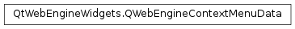

Qt Documentation
QWebEngineContextMenuData¶
Synopsis¶
Functions¶
- def
editFlags() - def
isContentEditable() - def
isValid() - def
linkText() - def
linkUrl() - def
mediaFlags() - def
mediaType() - def
mediaUrl() - def
misspelledWord() - def
position() - def
selectedText() - def
spellCheckerSuggestions()
Detailed Description¶
The
PySide2.QtWebEngineWidgets.QWebEngineContextMenuDataclass provides context data for populating or extending a context menu with actions.
PySide2.QtWebEngineWidgets.QWebEngineContextMenuDatais returned byQWebEnginePage.contextMenuData()after a context menu event, and contains information about where the context menu event took place. This is also in the context in which any context specificQWebEnginePage.WebActionwill be performed.
-
class
PySide2.QtWebEngineWidgets.QWebEngineContextMenuData¶ -
class
PySide2.QtWebEngineWidgets.QWebEngineContextMenuData(other) Parameters: other – PySide2.QtWebEngineWidgets.QWebEngineContextMenuDataConstructs null context menu data.
Constructs context menu data from
other.
-
PySide2.QtWebEngineWidgets.QWebEngineContextMenuData.MediaType¶ This enum describes the media type of the context if any.
Constant Description QWebEngineContextMenuData.MediaTypeNone The context is not a media type. QWebEngineContextMenuData.MediaTypeImage The context is an image element. QWebEngineContextMenuData.MediaTypeVideo The context is a video element. QWebEngineContextMenuData.MediaTypeAudio The context is an audio element. QWebEngineContextMenuData.MediaTypeCanvas The context is a canvas element. QWebEngineContextMenuData.MediaTypeFile The context is a file. QWebEngineContextMenuData.MediaTypePlugin The context is a plugin element.
-
PySide2.QtWebEngineWidgets.QWebEngineContextMenuData.MediaFlag¶ The current media element’s status and its available operations.
MediaNoneif the selected web page content is not a media element.Constant Description QWebEngineContextMenuData.MediaInError An error occurred. QWebEngineContextMenuData.MediaPaused Media is paused. QWebEngineContextMenuData.MediaMuted Media is muted. QWebEngineContextMenuData.MediaLoop Media can be looped. QWebEngineContextMenuData.MediaCanSave Media can be saved. QWebEngineContextMenuData.MediaHasAudio Media has audio. QWebEngineContextMenuData.MediaCanToggleControls Media can show controls. QWebEngineContextMenuData.MediaControls Media controls are shown. QWebEngineContextMenuData.MediaCanPrint Media is printable. QWebEngineContextMenuData.MediaCanRotate Media is rotatable.
Note
This enum was introduced in Qt 5.11.
-
PySide2.QtWebEngineWidgets.QWebEngineContextMenuData.EditFlag¶ The available edit operations in the current context.
Constant Description QWebEngineContextMenuData.CanUndo Undo is available. QWebEngineContextMenuData.CanRedo Redo is available. QWebEngineContextMenuData.CanCut Cut is available. QWebEngineContextMenuData.CanCopy Copy is available. QWebEngineContextMenuData.CanPaste Paste is available. QWebEngineContextMenuData.CanDelete Delete is available. QWebEngineContextMenuData.CanSelectAll Select All is available. QWebEngineContextMenuData.CanTranslate Translate is available. QWebEngineContextMenuData.CanEditRichly Context is richly editable.
Note
This enum was introduced in Qt 5.11.
-
PySide2.QtWebEngineWidgets.QWebEngineContextMenuData.editFlags()¶ Return type: PySide2.QtWebEngineWidgets.QWebEngineContextMenuData.EditFlagsReturns the available edit operations in the current context or
CanDoNoneif no actions are available.
-
PySide2.QtWebEngineWidgets.QWebEngineContextMenuData.isContentEditable()¶ Return type: PySide2.QtCore.boolReturns
trueif the content is editable by the user; otherwise returnsfalse.
-
PySide2.QtWebEngineWidgets.QWebEngineContextMenuData.isValid()¶ Return type: PySide2.QtCore.boolReturns
trueif the context data is valid; otherwise returnsfalse.
-
PySide2.QtWebEngineWidgets.QWebEngineContextMenuData.linkText()¶ Return type: unicode Returns the text of a link if the context is a link.
-
PySide2.QtWebEngineWidgets.QWebEngineContextMenuData.linkUrl()¶ Return type: PySide2.QtCore.QUrlReturns the URL of a link if the context is a link. It is not guaranteed to be a valid URL.
-
PySide2.QtWebEngineWidgets.QWebEngineContextMenuData.mediaFlags()¶ Return type: PySide2.QtWebEngineWidgets.QWebEngineContextMenuData.MediaFlagsReturns the current media element’s status and its available operations.
MediaNoneif the selected web page content is not a media element.
-
PySide2.QtWebEngineWidgets.QWebEngineContextMenuData.mediaType()¶ Return type: PySide2.QtWebEngineWidgets.QWebEngineContextMenuData.MediaTypeReturns the type of the media element or
MediaTypeNoneif the context is not a media element.
-
PySide2.QtWebEngineWidgets.QWebEngineContextMenuData.mediaUrl()¶ Return type: PySide2.QtCore.QUrlIf the context is a media element, returns the URL of that media.
-
PySide2.QtWebEngineWidgets.QWebEngineContextMenuData.misspelledWord()¶ Return type: unicode If the context is a word considered misspelled by the spell-checker, returns the misspelled word.
For possible replacements of the word, see
PySide2.QtWebEngineWidgets.QWebEngineContextMenuData.spellCheckerSuggestions().
-
PySide2.QtWebEngineWidgets.QWebEngineContextMenuData.position()¶ Return type: PySide2.QtCore.QPointReturns the position of the context, usually the mouse position where the context menu event was triggered.
-
PySide2.QtWebEngineWidgets.QWebEngineContextMenuData.selectedText()¶ Return type: unicode Returns the selected text of the context.
-
PySide2.QtWebEngineWidgets.QWebEngineContextMenuData.spellCheckerSuggestions()¶ Return type: list of strings If the context is a word considered misspelled by the spell-checker, returns a list of suggested replacements for
PySide2.QtWebEngineWidgets.QWebEngineContextMenuData.misspelledWord().
© 2018 The Qt Company Ltd. Documentation contributions included herein are the copyrights of their respective owners. The documentation provided herein is licensed under the terms of the GNU Free Documentation License version 1.3 as published by the Free Software Foundation. Qt and respective logos are trademarks of The Qt Company Ltd. in Finland and/or other countries worldwide. All other trademarks are property of their respective owners.